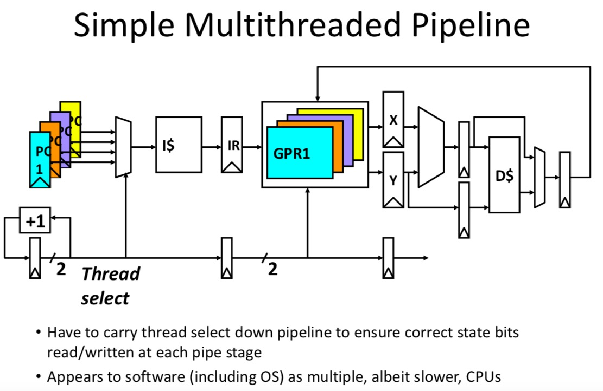
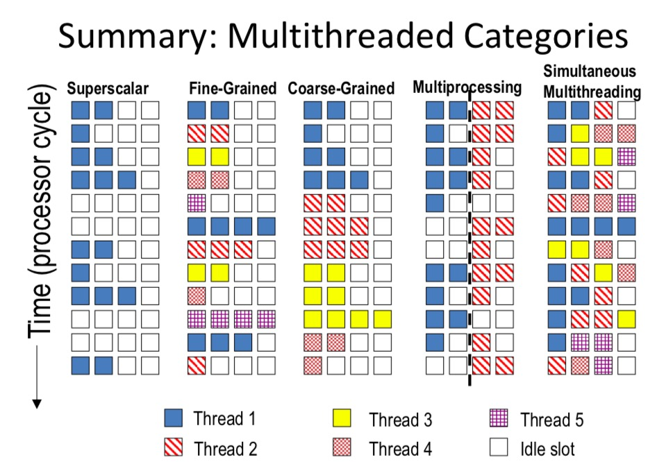

Firstly introduce some basic knowledge about GPU to better illustrate the concept of multithreading.
GPU
GPUs use a SIMT(Single Instruction, Multiple Thread) model, where individual scalar instruction streams for each CUDA thread are grouped together for SIMD execution.
GPU is more lk
Multithreading: A Short Review
Motivation of Multithreading
- Difficult to continue to extract instruction-level parallelism or data level parallelism from a single sequential thread of control.
- Many workloads can make use of thread-level parallelism.
- Multithreading use TLP to improve utilization of a single processor.
Coarse-Grain Multithreading
There is a question: how can we guarantee no dependencies between instructions in a pipeline?
One possible solution: to interleave execution of instructions from different program threads on same pipeline.
A simple multithreaded pipeline 
However, multithreading has its cost: 1. Each thread requires its own user state: PC, GPRs and so on. 2. It also needs to record its own systems state: page table, base register, exception handling register. 3. Other overheads: + Additional cache / TLB conflicts from competing threading. + Need larger cahce/TLB capacity. + More OS overhead to schedule more threads. ### Thread Scheduling Policies
Simultaneous Multithreading
Simultaneous Multithreading(SMT) use fine-grain control already presented inside an OOO superscalar to allow instructions from multiple thread to enter execution on same lock cycle, which contributes to better utilization of machine resources.
Summary of Multithread
